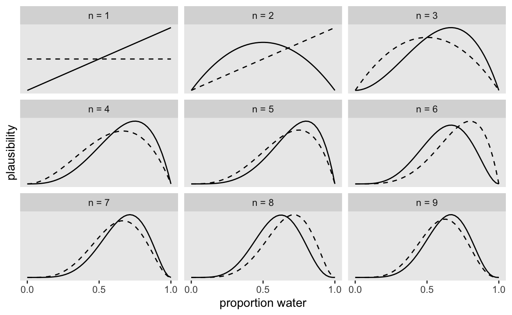
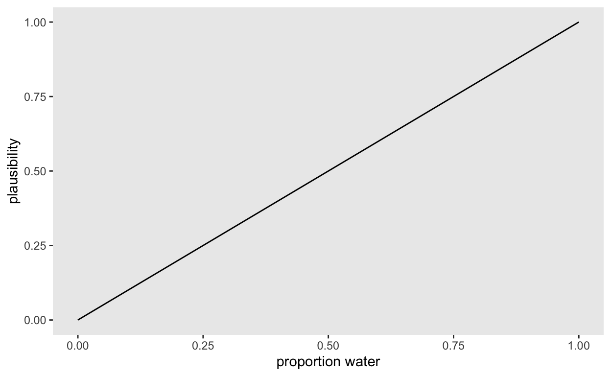
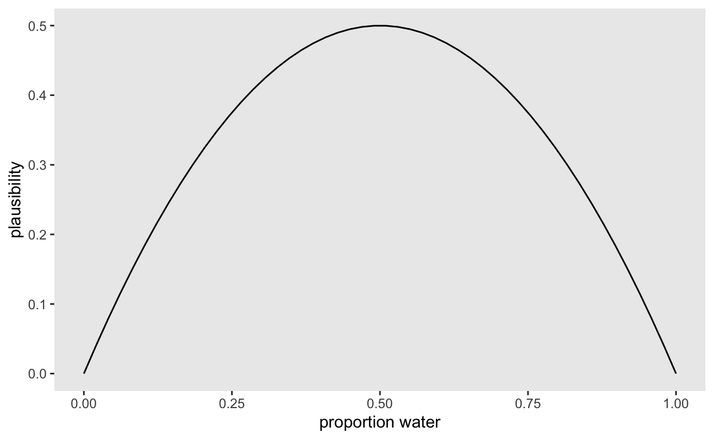
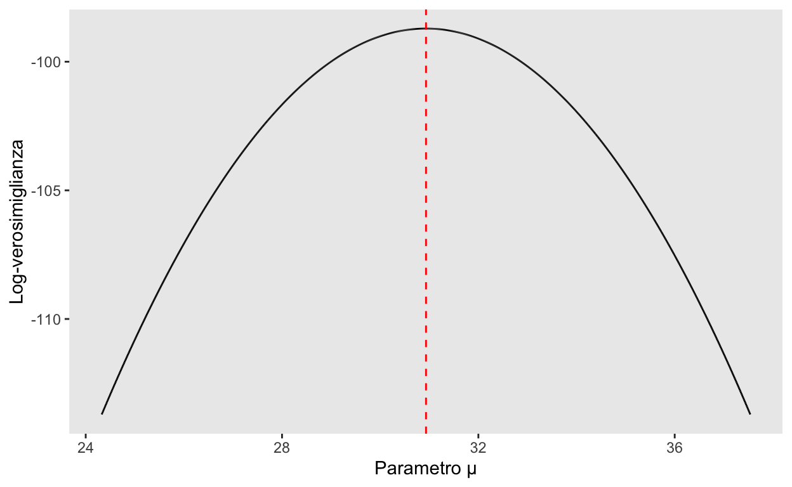

Di solito, quando parliamo di distribuzioni di probabilità, assumiamo di conoscere i valori dei parametri. Nel mondo reale, però, di solito è il contrario. Quello che abbiamo sono dei dati. I parametri sono quello che vogliamo sapere.
Iniziamo con un esempio. Supponiamo di studiare i pettirossi. Sappiamo che, tra fine aprile e inizio maggio, la femmina di pettirosso depone all’interno del nido quattro o sei uova. Dopo la schiusa, ai piccoli bastano 15/20 giorni per essere in grado di volare e abbandonare il nido. Ma solo pochi sopravvivono a causa dell’alta mortalità infantile.
Immaginiamo di avere osservato una femmina di pettirosso che cova cinque uova. Di questi, tre neonati sopravvivono e prendono il volo 14 giorni dopo la schiusa delle uova. Cosa ci dice questo della probabilità di un neonato di sopravvivere, per questa femmina? Cosa ci dicono questi dati della probabilità di sopravvivenza nella popolazione?
Noi sappiamo quale sia la probabilità di sopravvivenza nella popolazione. Ma possiamo calcolare la verosimiglianza di ottenere i dati che abbiamo osservato per valori diversi di questo parametro sconosciuto:
dbinom(x=3, size=5, prob=0.1)
[1] 0.0081Se cambiamo il valore del parametro p (probabilità di sopravvivenza), la verosimiglianza di ottenere i dati cambia:
dbinom(x=3, size=5, prob=0.4)
[1] 0.2304dbinom(x=3, size=5, prob=0.9)
[1] 0.0729Dai calcoli precedenti vediamo che è più plausibile osservare 3 “successi” in 5 prove se la probabilità di successo è 0.4 piuttosto che 0.1 o 0.9.
Questo modo di ragionare è così comune in statistica che ha un nome speciale: si chiama verosimiglianza. La verosimiglianza descrive la plausibilità di osservare i dati al variare dei valori del parametro di un modello statistico. Ciò ci conduce alla seguente definizione.
Definizione
La funzione di verosimiglianza è la funzione di massa o di densità di probabilità dei dati vista come una funzione dei parametri sconosciuti.
Un esempio
Per capire meglio cosa significa la definizione precedente ci focalizzeremo sul caso di un’unico parametro sconosciuto e prenderemo in esame la distribuzione Binomiale. Inizio caricando i pacchetti che userò in questo tutorial.
library("tidyverse", warn.conflicts = FALSE)
library("bayesplot")
Nella discussione seguente non ci occuperemo più di pettirossi ma esamineremo un esempio discusso da McElreath (2020). Supponiamo di tenere in mano un mappamondo gonfiabile e di chiederci: “qual’è la proporzione della superficie terreste ricoperta d’acqua?” Sembra una domanda a cui è difficile rispondere. Ma ci viene in mente questa idea brillante: lanciamo in aria il mappamondo e, quando lo riprendiamo, osserviamo se la superfice del mappamondo sotto il nostro dito indice destro rappresenta acqua o terra. Possiamo ripetere questa procedura più volte, così da ottenere un campione causale di diverse porzioni della superficie dal mappamondo. Eseguiamo il nostro esperimento lanciando in aria il mappamondo nove volte e osserviamo i seguenti risultati: A, T, A, A, A, T, A, T, A, dove “A” indica acqua e “T” indica terra.
Modello statistico
Qual è il modello statistico che potrebbe avere generato i dati che abbiamo osservato? Per l’esempio del mappamondo possiamo dire quanto segue:
- la proporzione del pianeta Terra ricoperta d’acqua è p;
- un singolo lancio del mappamondo ha una probabilità p di produrre l’osservazione “acqua” (A);
- i lanci del mappamondo sono indipendenti (nel senso che il risultato di un lancio non influenza i risultati degli altri lanci).
Le caratteristiche descritte sopra definiscono il processo generativo dei dati che sta alla base della distribuzione Binomiale. Nel caso presente, il parametro sconosciuto è p.
Sappiamo dunque che legge Binomiale illustra la relazione tra i dati osservati e il parametri sconosciuto p:
\[ p(x \mid p) = \binom{n}{k} p^k (1-p)^{n-k} \]
Coefficiente binomiale
Il coefficiente binomiale è
\[
\binom{n}{k} = \frac{n!}{k! (n-k)!}
\] In R la funzione che restituisce come risultato il fattoriale di \(a\) è factorial(). Per esempio:
factorial(3)
[1] 6Ma il risultato del coefficiente binomiale viene calcolato direttamente dalla funzione choose(). Per esempio, consideriamo il caso in cui n = 9 e k = 6:
choose(9, 6)
[1] 84ovvero
Dunque, possiamo implementare la legge binomiale in una funzione R nel modo seguente:
binomial <- function(k, n, p) {
choose(n, k) * p^k * (1 - p)^(n - k)
}
Ovviamemente, tale funzione è già presente in R ed è data da dbinom(). Controlliamo:
binomial(6, 9, 0.2)
[1] 0.002752512dbinom(6, 9, 0.2)
[1] 0.002752512La funzione di verosimiglianza
Adesso poniamoci il problema di capire come si crea la figura che ho preso dal seguente script la quale implementa in R la figura riportata da McElreath (2020).
Inziamo a definire un vettore che contiene i dati:
d <- tibble(toss = c("w", "l", "w", "w", "w", "l", "w", "l", "w"))
d <- d %>%
mutate(n_trials = 1:9,
n_success = cumsum(toss == "w"))
d
# A tibble: 9 x 3
toss n_trials n_success
<chr> <int> <int>
1 w 1 1
2 l 2 1
3 w 3 2
4 w 4 3
5 w 5 4
6 l 6 4
7 w 7 5
8 l 8 5
9 w 9 6sequence_length <- 50
d %>%
expand(
nesting(
n_trials, toss, n_success
),
p_water = seq(
from = 0, to = 1,
length.out = sequence_length
)
) %>%
group_by(p_water) %>%
mutate(
lagged_n_trials = lag(n_trials, k = 1),
lagged_n_success = lag(n_success, k = 1)
) %>%
ungroup() %>%
mutate(
prior = ifelse(
n_trials == 1, .5,
dbinom(
x = lagged_n_success,
size = lagged_n_trials,
prob = p_water
)
),
likelihood = dbinom(
x = n_success,
size = n_trials,
prob = p_water
),
strip = str_c("n = ", n_trials)
) %>%
# the next three lines allow us to normalize the prior and the likelihood,
# putting them both in a probability metric
group_by(n_trials) %>%
mutate(
prior = prior / sum(prior),
likelihood = likelihood / sum(likelihood)
) %>%
# plot!
ggplot(aes(x = p_water)) +
geom_line(aes(y = prior),
linetype = 2
) +
geom_line(aes(y = likelihood)) +
scale_x_continuous("proportion water", breaks = c(0, .5, 1)) +
scale_y_continuous("plausibility", breaks = NULL) +
theme(panel.grid = element_blank()) +
facet_wrap(~strip, scales = "free_y")

La curva rappresentata in ciascun pannello della figura precedente è la funzione di verosimiglianza calcolata utilizzando la legge Binomiale, ma considierando campioni diversi di dati. Nel pannello n = 1 è rappresentata la verosimiglianza dei possibili valori del parametro sconosciuto p se abbiamo osservato solo un successo in 1 prova dell’esperimento casuale. Nel secondo pannello, n = 2 è rappresentata la verosimiglianza che si ottiene avendo osservato un successo e un insuccesso in due prove successive dell’esperimento casuale. E così via.
Iniziamo dal pannello n = 1.
La definizione della funzione di verosimiglianza ci dice che dobbiamo usare la legge Binomiale tenendo costanti i dati. Questo significa che dobbiamo variare i valori del parametro p. Quali valori può assumere p? Tutti i valori nell’intervallo [0, 1]. Ne considereremo qui 50:
p <- seq(0, 1, length.out = 50)
p
[1] 0.00000000 0.02040816 0.04081633 0.06122449 0.08163265 0.10204082
[7] 0.12244898 0.14285714 0.16326531 0.18367347 0.20408163 0.22448980
[13] 0.24489796 0.26530612 0.28571429 0.30612245 0.32653061 0.34693878
[19] 0.36734694 0.38775510 0.40816327 0.42857143 0.44897959 0.46938776
[25] 0.48979592 0.51020408 0.53061224 0.55102041 0.57142857 0.59183673
[31] 0.61224490 0.63265306 0.65306122 0.67346939 0.69387755 0.71428571
[37] 0.73469388 0.75510204 0.77551020 0.79591837 0.81632653 0.83673469
[43] 0.85714286 0.87755102 0.89795918 0.91836735 0.93877551 0.95918367
[49] 0.97959184 1.00000000Quali sono i nostri dati? Se abbiamo ottenuto “acqua” avendo lanciato una volta in aria il mappadondo, allora i nostri dati sono: k = 1, con n = 1. Inseriamo dunque tali dati nella formula della Binomiale:
l <- binomial(1, 1, p)
l
[1] 0.00000000 0.02040816 0.04081633 0.06122449 0.08163265 0.10204082
[7] 0.12244898 0.14285714 0.16326531 0.18367347 0.20408163 0.22448980
[13] 0.24489796 0.26530612 0.28571429 0.30612245 0.32653061 0.34693878
[19] 0.36734694 0.38775510 0.40816327 0.42857143 0.44897959 0.46938776
[25] 0.48979592 0.51020408 0.53061224 0.55102041 0.57142857 0.59183673
[31] 0.61224490 0.63265306 0.65306122 0.67346939 0.69387755 0.71428571
[37] 0.73469388 0.75510204 0.77551020 0.79591837 0.81632653 0.83673469
[43] 0.85714286 0.87755102 0.89795918 0.91836735 0.93877551 0.95918367
[49] 0.97959184 1.00000000Creaimo un diagramma con il risultato ottenuto.
like <- data.frame(
l = l
)
like %>%
ggplot(aes(x = p)) +
geom_line(aes(y = l),
linetype = 1
) +
labs(
y = "plausibility",
x = "proportion water"
) +
theme(panel.grid = element_blank())

La figura ci dice che, avendo osservato un successo in una prova, la plausibilità che p sia uguale a 1 è massima. La plausibilità di p diminuisce allonandoci dal valore possibile p = 1, fino ad arrivare al valore minimo, ovvero 0, in corrispondenza dell’ipotesi secondo la quale p = 0. È infatti impossibile che p = 0 dato che abbiamo osservato un successo. Quindi deve essere vero che p \(>\) 0.
Adesso lanciamo il mappamondo una seconda volta. Osserviamo “terra.” Ripetiamo la procedura descritta sopra.
l <- binomial(1, 2, p)
like <- data.frame(
l = l
)
like %>%
ggplot(aes(x = p)) +
geom_line(aes(y = l),
linetype = 1
) +
labs(
y = "plausibility",
x = "proportion water"
) +
theme(panel.grid = element_blank())

La figura ci dice che ci sono due valori del parametro p che sono impossibili: p = 0, perché abbiamo osservato un successo e p = 1, in quanto abbiamo osservato un insuccesso. In tali condizioni, è inuitivo che il valore p più plausibile sia nell’intorno di 0.5. Infatti, la figura ci dice proprio questo.
Evidentemente non abbiamo bisogno di usare la nostra funzione binomial() per ottenere i risultati descritti sopra. Gli stessi risultati si ottengono con la funzione dbinom():
l <- dbinom(1, 2, p)
like <- data.frame(
l = l
)
like %>%
ggplot(aes(x = p)) +
geom_line(aes(y = l),
linetype = 1
) +
labs(
y = "plausibility",
x = "proportion water"
) +
theme(panel.grid = element_blank())

Ripetendo questo ragionamento, ovvero ripercorrendo i vari passi dell’esempio fino ad ottenere 6 successi in 9 prove, riusciamo a costruire la figura con nove pannelli riportata sopra.
Verosimiglianza per una Normale
Poniamoci ora il problema di calcolare la verosimiglianza per i parametri sconosciuti di una distribuzione Normale avendo a disposizione un campione casuale di osservazioni. Essendo il campione casuale, la distribuzione di probabilità congiunta dei dati, dati i parametri, è data dal prodotto della densità di ciascuna singola osservazione:
Come troviamo la densità di una singola osservazione? È ovviamente data da
dnorm(x, mean = mu, sigma = sigma)
Se il nostro campione è costituito da 30 osservazioni sarà dunque necessario fare il prodotto di 30 densità. Il problema di procedere in questo modo, però, è che il risultato numerico di questo prodotto divenerà molto piccolo, e i computer hanno difficoltà a manipolare numeri così piccoli. Tale problema può essere risolto prendendo il logaritmo. Per le proprietà dei logaritmi, inoltre, il logaritmo di un prodotto è uguale alla somma dei logaritmi. Per esempio,
Dunque, se vogliamo costruire la funzione di log-verosimiglianza per un campione di 30 osservazioni sarà sufficiente sommare le 30 log-verosimiglianze.
Consideriamo i dati delle dispense:
d <- data.frame(
x = c(26, 35, 30, 25, 44, 30, 33, 43, 22, 43, 24, 19, 39, 31, 25,
28, 35, 30, 26, 31, 41, 36, 26, 35, 33, 28, 27, 34, 27, 22)
)
Per semplificare il problema, poniamoci l’obiettivo di stimare solo uno dei due parametri sconosciuti, ovvero \(\mu\), tenendo \(\sigma\) uguale alla deviazione standard campionaria:
true_sigma <- sd(d$x)
Definiamo la funzione di log-verosimiglianza:
L’argomento log=TRUE nella funzione dnorm() specifica che vogliamo il logaritmo della densità Normale.
La situazione è dunque simile a quella che abbiamo discusso nel caso della Binomiale. La complicazione è che dobbiamo fare una somma di 30 addendi, ma tale somma viene calcolata all’interno della funzione log_likelihood() per cui non ci preoccupiamo di essa.
Notiamo invece che della funzione log_likelihood() richiede tre argomenti: il primo argomento x corrisponde al vettore che contiene i dati; il secondo argomento mu è il parametro sconosciuto; il terzo argomento, nell’esempio che stiamo discutendo, viene mantenuto costante.
Come abbiao fatto per l’esempio sulla verosimiglianza di una Binomiale, definiamo una serie di valori per il parametro sconosciuto mu:
Nel caso presente esamineremo un grande numero di valri possibili per il parametro sconosciuto: 1e5.
Siamo ora nelle condizioni di trovare i valori della log-verosimiglianza:
ll <- rep(NA, nrep)
for (i in 1:nrep) {
ll[i] <- log_likelihood(d$x, mu[i], true_sigma)
}
Facciamo un esempio. Consideriamo un valore preso a caso per il parametro mu, per esempio, 28, e svolgiamo i calcoli. Dobbiamo calcolare il valore che viene ritornato da ´dnorm(…, log=TRUE)´ per ciascuno dei valori x del campione, tenendo costanti i valori sigma = s e mu = 28:
mu_test <- 28
dnorm(d$x, mu_test, true_sigma, log=TRUE)
[1] -2.852865 -3.368322 -2.852865 -2.910138 -5.739425 -2.852865
[7] -3.093412 -5.384332 -3.219412 -5.384332 -2.990320 -3.734870
[13] -4.193054 -2.910138 -2.910138 -2.807047 -3.368322 -2.852865
[19] -2.852865 -2.910138 -4.742875 -3.540141 -2.852865 -3.368322
[25] -3.093412 -2.807047 -2.818501 -3.219412 -2.818501 -3.219412La somma di questi valori è
Nello script precedente, questi calcoli sono stati svolti per tutti gli 1e5 valori ipotizzati per mu. Verifichiamo. Chiediamoci intanto a quale indice del vettore mu corrisponde il valore di mu_test = 28. Nel vettore che abbiamo creato, il valore più prossimo a 28 corrisponde all’elemento in posizione
ovvero
mu[mu_index]
[1] 28.00006Chiediamoci dunque qual è il valore dell’elemento pari a mu_index del vettore ll:
ll[mu_index]
[1] -101.6681il che conferma il risultato dei calcoli che abbiamo svolto in precedenza.
La log-verosimiglianza
Disegnamo ora la funzione di log-verosimiglianza per il parametro sconosciuto \(\mu\):
data.frame(mu, ll) %>%
ggplot(aes(x=mu, y=ll)) +
geom_line() +
vline_at(mean(d$x), color="red", linetype="dashed") +
labs(
y="Log-verosimiglianza",
x=c("Parametro \u03BC")
) +
theme(panel.grid = element_blank())

La funzione di log-verosimiglianza ha un massimo. Il valore \(\mu\) corrispondente a tale massimo è lo stimatore di massima verosimiglianza per la media sconosciuta della popolazione. Noi sappiamo che tale stimatore non è altro che la media del campione. Controlliamo:
mean(d$x)
[1] 30.93333ovvero
mu[which.max(ll)]
[1] 30.93327